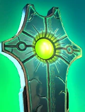
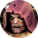

| # | Joueur | Score | Jetons perdus |  Magnus Magnus |  Thaumachus Thaumachus |  Abraxas Abraxas |  Silent King Silent King |  Menhir |  Mortarion Mortarion |  Nauseous |  Corrodius Corrodius |  Eldryon Eldryon | |
|---|---|---|---|---|---|---|---|---|---|---|---|---|---|
| 1 | bqsylou | +19,4 % | 0 | - | +21,7 % | +1,8 % | - | +33,8 % | - | - | - | -9,1 % | - |
| 2 | Stitchy | +18,3 % | 0 | - | - | - | +14,5 % | - | +20,5 % | - | - | - | - |
| 3 | Ancien membre | +14,6 % | 0 | - | - | - | +27,2 % | - | +17,3 % | - | - | -19,3 % | - |
| 4 | GAlbric | +14,4 % | 0 | -0,2 % | - | - | +19,8 % | -14,9 % | +35,2 % | - | +12,3 % | - | - |
| 5 | Qiramond | +12,7 % | 1 | +24,8 % | - | - | -10,9 % | - | +22,1 % | - | - | -36,2 % | - |
| 6 | Vindicator | +11,6 % | 0 | +19,2 % | - | - | - | -22,5 % | +10,3 % | - | - | - | - |
| 7 | Sephiroth | +11,1 % | 0 | -0,8 % | - | - | -14,1 % | - | +17,5 % | - | - | +16,5 % | - |
| 8 | RandAlThor | +11,0 % | 0 | +3,5 % | - | - | +6,0 % | - | +15,4 % | - | - | +15,5 % | -0,6 % |
| 9 | RaK | +9,1 % | 0 | +13,2 % | - | - | +25,7 % | - | -3,8 % | - | - | - | +0,2 % |
| 10 | PsychoNizz | +8,7 % | 0 | - | - | - | +19,4 % | - | +1,6 % | - | - | +26,5 % | - |
| 11 | Thoramok | +6,1 % | 2 | +18,8 % | - | - | -8,7 % | - | - | - | -56,3 % | +19,4 % | - |
| 12 | Garonne | +5,6 % | 2 | -30,7 % | - | - | +9,6 % | - | +22,4 % | - | - | -0,0 % | - |
| 13 | Eliox | +4,7 % | 0 | -44,8 % | - | - | +8,5 % | - | - | - | - | +6,5 % | - |
| 14 | RegalBaston | +3,4 % | 0 | -25,9 % | -4,5 % | +9,1 % | +7,1 % | -10,8 % | +6,4 % | - | - | +6,3 % | - |
| 15 | Alvalero | -1,1 % | 0 | - | - | - | -0,3 % | - | -3,2 % | - | - | +1,9 % | - |
| 16 | Zebulon | -2,6 % | 0 | -8,5 % | - | - | - | - | +1,8 % | - | - | - | - |
| 17 | Psychward | -3,2 % | 0 | -16,1 % | - | - | - | - | +18,0 % | - | - | -24,8 % | - |
| 18 | Bixa | -4,6 % | 0 | -23,3 % | - | - | -5,9 % | - | +3,0 % | - | - | +11,2 % | - |
| 19 | AllHailShadowSn | -6,9 % | 1 | - | +14,9 % | - | - | -18,6 % | - | +3,0 % | - | - | - |
| 20 | Lafleur | -8,1 % | 0 | - | - | -18,0 % | -13,9 % | -18,7 % | - | +2,8 % | - | - | - |
| 21 | Ellimi | -12,3 % | 0 | -55,6 % | - | - | -10,7 % | +12,0 % | -22,1 % | - | - | +10,6 % | - |
| 22 | Vahal | -13,5 % | 2 | -2,8 % | - | - | -26,2 % | - | -8,5 % | - | - | -32,5 % | - |
| 23 | Highmanny | -13,6 % | 1 | -38,3 % | -25,1 % | - | - | -0,7 % | - | +7,0 % | - | - | - |
| 24 | BrutaL | -20,2 % | 0 | -46,8 % | - | - | -8,4 % | - | -38,7 % | - | - | -22,7 % | - |
| 25 | Zyxs | -20,4 % | 2 | -9,3 % | - | - | +19,5 % | - | -50,3 % | -16,6 % | - | - | - |
| 26 | PsychoRazahrds | -22,5 % | 1 | -12,9 % | - | - | - | -8,9 % | -45,0 % | -36,5 % | - | -46,7 % | - |
| 27 | Peuchy | -24,9 % | 0 | - | -51,8 % | - | -45,6 % | -17,1 % | -45,1 % | +9,4 % | - | - | - |
| 28 | Ancien membre | -28,1 % | 4 | - | - | - | - | - | -15,6 % | - | - | - | - |
| 29 | Ancien membre | -34,0 % | 1 | -20,9 % | - | - | -44,0 % | - | -34,7 % | - | - | - | - |
| 30 | Ancien membre | -40,8 % | 4 | -1,5 % | - | - | -36,8 % | - | -34,8 % | - | -17,4 % | -33,5 % | - |
Dégâts par attaque relativement à la moyenne de la guilde sur la saison, sans finishs, à partir de Legendary 4. Une saison compte 27 jetons : chaque jeton non joué est un jeton perdu et retire 1/27 des dégâts du score de la saison